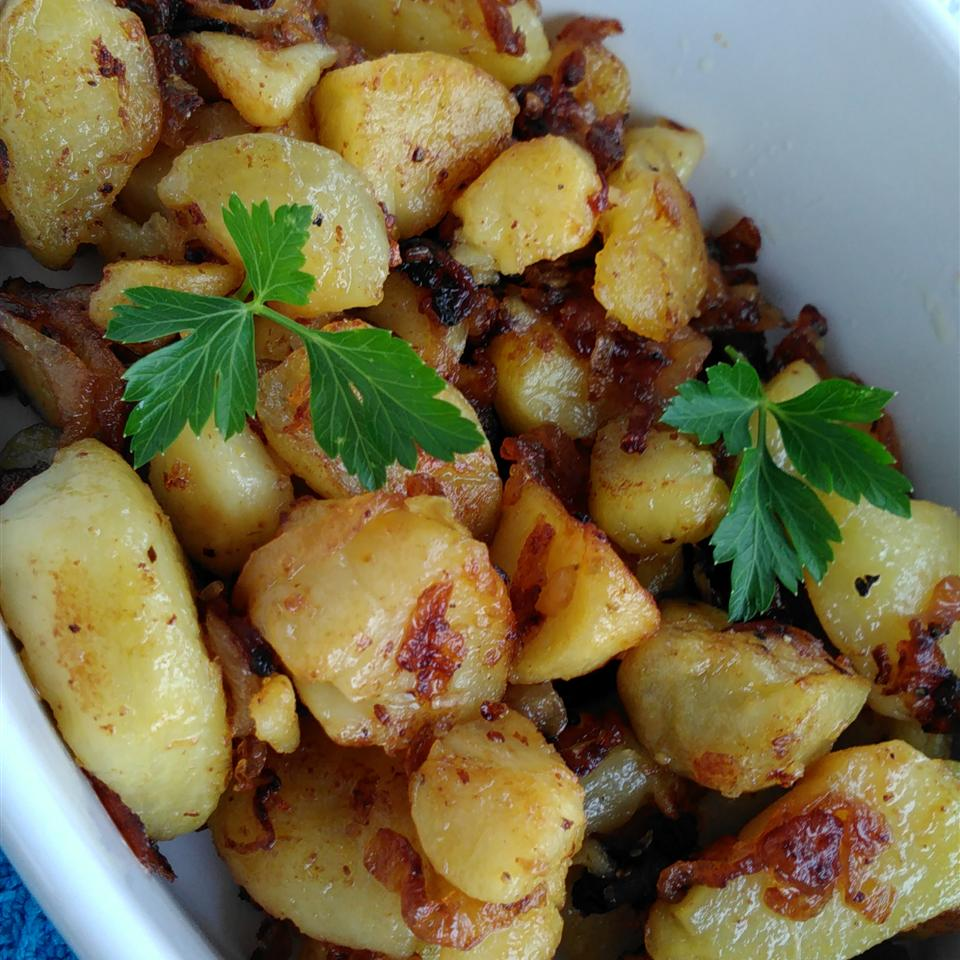

Baked potatoes

Description
When I was working my way through college at a local diner, I learned that
they used leftover baked potatoes from the dinner menu that they baked the
day before. They always made extra baked potatoes so that they could use
them for home fries the next morning. I discovered that this was the 'secret'
to having flaky, crispy home fries. Very easy to make.
Per Serving: 126 calories; protein 2g; carbohydrates 17g; fat 5.9g; cholesterol
15.3mg; sodium 46.8mg.
Ingridients
- 2 large baking potatoes
- 2 tablespoons butter
- ¼ cup chopped onion
- salt and ground black pepper to taste
Steps
- Scrub the potatoes well and pierce with a fork. Cook on full power in microwave oven
for 5 minutes; turn the potatoes over and cook 5 more minutes. Remove the potatoes
from the oven and set aside to cool. Thinly slice the cooled potatoes.
- Cook and stir the butter and onion in a large skillet over medium heat until the onion
is translucent, about 5 minutes. Gently place the potatoes into the skillet and fry,
carefully flipping the potatoes a few times, until slices are browned around the edges.
Sprinkle with salt and pepper.